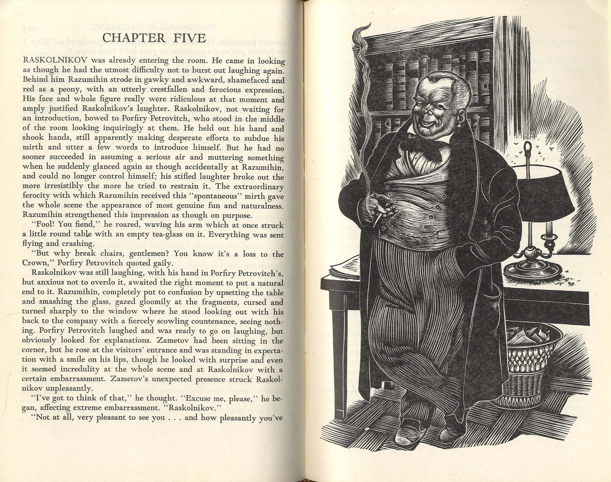
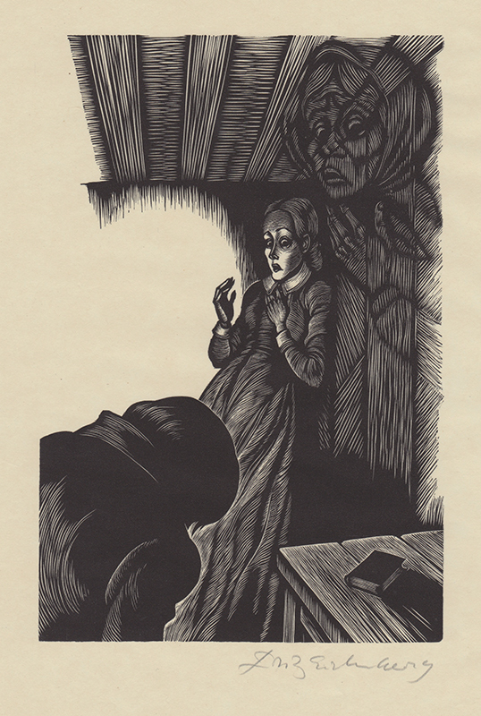
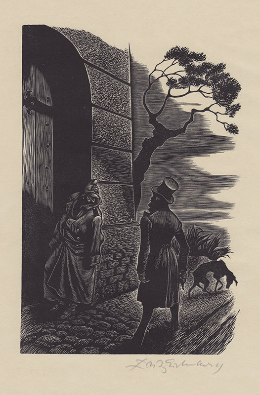

I · The Axe Falls
Part 1 · St. Petersburg, summer 1865
Raskolnikov is trying to avoid his landlady. That small detail tells you everything: he owes her rent, he is barely eating, and he has spent weeks in his sweltering garret constructing a philosophy to justify murder. He is twenty-three, brilliant, and convinced he is extraordinary.
St. Petersburg in summer is an assault on the senses — the stench of the Haymarket, the drunks sprawled on the canal steps, the crush of unwashed humanity. Dostoevsky plants us right in the fever of it. Raskolnikov navigates these streets in a daze, rehearsing his idea: the world divides into ordinary people, who exist merely to reproduce, and extraordinary people. The extraordinary — Napoleons, Newtons — have the right to transgress moral law when history demands it. He has written an article saying as much. Now he wants to know if he belongs to that second category.
His test case is Alyona Ivanovna, a miserly old pawnbroker who charges ruinous interest to the desperate poor. He has already visited her once, pawning a watch. She is, he tells himself, a louse — worse than a louse, a destructive parasite. The money locked in her trunk could fund a dozen useful lives. Kill her, take the money, go on to do great things. Simple arithmetic.
At the tavern, he meets Marmeladov, a ruined civil servant who pours out his story with operatic self-pity. His daughter Sonya has taken a yellow ticket — become a registered prostitute — to keep the family from starving. Marmeladov knows he is destroying them and cannot stop. The encounter unsettles Raskolnikov in ways he cannot name: here is suffering that no theory can tidy away.
Then a letter from his mother arrives. His sister Dunya is engaged to Pyotr Luzhin, a pompous lawyer. The engagement is plainly a sacrifice — Dunya is selling herself so that Raskolnikov can finish his studies. He reads this and something hardens in him. He will not allow it. He will solve this himself.

He goes to Alyona's apartment on the fourth floor of a gloomy courtyard building. He has an axe borrowed from the porter's lodge. The old woman lets him in, suspicious. He strikes her twice. Then he hears footsteps: Lizaveta, Alyona's simple-minded half-sister, arrives unexpectedly. She too dies under the axe. Raskolnikov did not plan for her. She was innocent by any measure, even his own.
"Taking a new step, uttering a new word, is what people fear most."
— Dostoevsky, narrator, Part 1He escapes by luck — two men arrive at the door while he hides inside, then leave — and staggers back through the Petersburg streets to his garret, shaking. The grand theory has met reality. The calculation that looked so clean on paper has left two women dead, one of them entirely innocent, and Raskolnikov in a state of shivering collapse.
The First Death of the Theory
Raskolnikov planned a clean philosophical experiment. What he performed was a butchery. Lizaveta's death is not an accident — it is the novel's first verdict on his idea. The extraordinary man, it turns out, cannot control events any more than the ordinary one can.
II · Fever & Guilt
Parts 2–3 · The days after
Raskolnikov returns to his garret and falls into a delirium that lasts days. He is not sick from any disease — the fever is guilt, working through his body because his mind refuses to admit it. When he surfaces he has buried the stolen items under a stone and has no clear memory of hiding them. His friend Razumikhin has been checking on him, bewildered.
He is summoned to the police station — not for murder, but over an unpaid debt to his landlady. While he waits in the anteroom he hears officers discussing the pawnbroker killings. He nearly faints. One of them notices. The incident plants the first seeds of suspicion, though no one yet has grounds to act.

On the street, Raskolnikov witnesses the death of Marmeladov, knocked down by a carriage — drunk, as he had always known he would die. Raskolnikov carries the dying man home and leaves his last money with Katerina Ivanovna for the funeral costs. The gesture surprises him as much as anyone. His mother Pulcheria Alexandrovna and sister Dunya arrive in Petersburg.
"Pain and suffering are always inevitable for a large intelligence and a deep heart."
— Raskolnikov, Part 2Raskolnikov meets Luzhin and is contemptuous from the first moment. The lawyer is precisely what his theory predicted: a man who has dressed his selfishness in the language of enlightened self-interest, who wants a wife grateful enough not to question him. Raskolnikov refuses to allow the engagement. His mother is hurt. His sister is quietly resolute.
What gnaws at him most is not the threat of arrest but a deeper disorientation. He had expected the deed to free him — to prove he was one kind of man. Instead he feels halved. He wanders the city unable to speak normally to anyone, unable to connect. The isolation he theorised as necessary has become suffocating. He begins to understand, without fully admitting it, that the theory was never really about the pawnbroker. It was always about himself.
Isolation as Its Own Punishment
Here is the novel's central paradox: Raskolnikov escapes the physical crime scene but cannot escape himself. His theory promised that the extraordinary man would feel free after the act — liberated, clarified, proven. Instead he gets the precise opposite. The freedom he theorised delivered a prison with no doors, no guards, and no possibility of appeal.
III · The Examiner
Parts 3–4 · Cat and mouse
Enter Porfiry Petrovich, the examining magistrate assigned to the pawnbroker case — and one of the great antagonists in all fiction. He does not bludgeon; he circles. He is cheerful, rumpled, apparently forgetful, and devastatingly intelligent. He already knows about Raskolnikov's article on crime, published some months earlier. Porfiry finds this fascinating.

Their first meeting is a chess match with the pieces disguised as small talk. Porfiry asks Raskolnikov to explain his article — to elaborate, here, in person. Raskolnikov defends it coolly. Napoleon never lost sleep over Toulon. Porfiry listens, smiles, asks: but how does an extraordinary man know he is extraordinary, before he has acted?
The question hangs in the air like smoke. It is the question Raskolnikov has been unable to answer since the axe.
"Power is given only to him who dares to stoop and take it. One must have the courage to dare."
— Raskolnikov, articulating his theory, Part 3A painter named Nikolay suddenly confesses to the murders, throwing the investigation into confusion. Porfiry does not believe him — he knows such confessions can be the product of religious mania — but the false trail buys Raskolnikov time. Meanwhile Svidrigailov appears: Dunya's former employer in the country, a man of wealth and bottomless moral corruption who seems to move through Petersburg like a ghost no one can quite touch. He claims to want to make amends for his mistreatment of Dunya. Nobody believes him, least of all Dunya.
Raskolnikov's second interview with Porfiry is more overtly hostile. The magistrate drops the pretence of friendly curiosity and probes directly. Raskolnikov loses his composure, then recovers, then loses it again. Both men know what the game is. Porfiry has no hard evidence. But he is not trying to arrest Raskolnikov — he is trying to convince him that confession is the only escape from the prison he has built inside himself.
The Trap Is the Mind
Porfiry is remarkable because his real weapon is psychology, not evidence. He understands that Raskolnikov will eventually break himself — the question is only whether it happens in time to save what is left. The interrogation scenes are among the most electrically tense in all literature precisely because both men are right about each other.
IV · Sonya's Light
Parts 4–5 · The other extraordinary person
Raskolnikov goes to see Sonya. He is drawn to her the way a man near the edge of a cliff is drawn to look down: by something vertiginous and involuntary. He does not yet understand why. She is everything his theory dismissed — poor, powerless, humiliated — and yet she has not been destroyed. He watches her with a fascination that is almost resentment.

He asks her to read to him from the Bible. She is startled but agrees. She reads the story of Lazarus — dead four days, already in the tomb, and then called back to life by Christ. Her voice breaks as she reads; she is not performing faith, she is living it. Raskolnikov listens, and for the first time something cracks in his armour. He does not know what it means yet. But he tells her: "We will go together."
The social world around him keeps deteriorating. The Marmeladov family, now fatherless, spirals toward disaster. Katerina Ivanovna — proud, consumptive, increasingly unhinged — throws a disastrous dinner party to prove her respectability, during which she is evicted and collapses in the street, dying from tuberculosis while her stepchildren look on. Luzhin, exposed by Raskolnikov at last, attempts to frame Sonya for theft. Razumikhin — decent, steady, completely without theory — sees through the frame-up immediately.
"I did not bow down to you, I bowed down to all the suffering of humanity."
— Raskolnikov to Sonya, Part 4Svidrigailov has been listening through a thin wall to Raskolnikov's first confession to Sonya. He holds this knowledge lightly, almost carelessly, the way he holds everything. He is a man who has crossed every boundary that Raskolnikov theorised about — and found only emptiness on the other side. He offers Raskolnikov money, Dunya money, everything — gestures of a man who knows he is finished and is distributing his estate before he leaves.
Sonya's faith is not naive. She knows exactly what she is and what the world is. What distinguishes her from Raskolnikov is not intelligence or innocence — it is that her suffering has opened her toward others rather than closing her against them. She is the novel's quiet refutation of everything he believed.
The Counter-Theory
Sonya is Dostoevsky's answer to Raskolnikov. Where he divides humanity into categories and uses that division to justify violence, she sees only individual human beings deserving of compassion. She has suffered more than he ever has, by any measure — and remained human. The Lazarus passage is not merely symbolic: it is the novel announcing its ending. Lazarus was four days dead and still came back — the story is asking, quietly and without sentimentality, whether a man spiritually dead can do the same.
V · Confession
Parts 5–6 · The collapse of the theory
Everything converges in Part 6. Porfiry visits Raskolnikov privately, no longer pretending to be casual. He speaks directly: I know you did it. I have no evidence that will hold in court. But you will confess — not because I will force you, but because you cannot live this way. He offers him something unexpected: a reduced sentence in exchange for a voluntary surrender. He seems almost kind.

Svidrigailov confronts Dunya alone in his apartment. He has a gun. She shoots at him twice — once missing, once grazing his scalp — and when she realises she cannot bring herself to kill him, he lets her go. There is something almost restful in the gesture. That night, he goes to an orphanage he has been quietly funding, makes large donations, tells a frightened child a story, and walks to a spot near the canal. He fires a revolver into his own temple at dawn.
Svidrigailov's suicide is the novel's dark mirror to Raskolnikov's story. He too crossed every boundary the theory permitted. He simply found nothing there. Unlike Raskolnikov, he has no Sonya. No thread back.
"To go wrong in one's own way is better than to go right in someone else's."
— Raskolnikov, on pride and self-determination, Part 5Raskolnikov goes to his mother and says goodbye without explaining why. She senses it is a farewell of some kind but does not understand. He goes to Sonya, who gives him a cypress-wood cross — it belonged to Lizaveta, the woman he killed by mistake. He takes it. He goes to the Haymarket, kneels in the dirt, and bows to the earth and the people around him, who think he is drunk. Then he walks to the police station and tells the officer on duty that he is the murderer of Alyona Ivanovna and Lizaveta.
It is not heroism. He is not yet redeemed. He confesses with gritted teeth, still half-convinced he should not have to, still resentful. But he does it. The act is its own beginning.
Knees in the Dirt
The bow in the Haymarket is one of the most powerful gestures in nineteenth-century fiction: a proud man pressing his face to the ground in front of people who do not know what he has done or why. Dostoevsky insists that the beginning of moral recovery is not a feeling but a physical act of submission — to the earth, to other people, to something larger than oneself.
VI · Siberia
Epilogue · Regeneration
Raskolnikov receives eight years of hard labour in Siberia. The sentence is lightened by his voluntary confession and by Razumikhin's tireless work on his behalf. Sonya follows him to Siberia, settling in the town near the camp and sending news of his family. Dunya marries Razumikhin — one of the most deserved unions in the novel's world. His mother, unable to bear the weight of what has happened, falls ill and dies without learning the full truth.
The Siberian steppe at dawn — the ending the novel has been building toward.
In Siberia, Raskolnikov is for a long time still himself: proud, withdrawn, contemptuous of the other prisoners. They sense something in him and dislike him for it. He falls ill again. Sonya visits daily when she can. She does not preach. She simply comes. The other prisoners, rough men who have done terrible things, are devoted to her. This itself unsettles Raskolnikov. She seems to reach everyone he cannot.
Then one morning in the second year, by the bank of the Irtysh river, something breaks open in him. He cannot explain it. Sonya is nearby. He goes to her and weeps. He holds her feet — echoing his bow in the Petersburg street, but this time with feeling behind it, not just gritted will.
"He did not know that the new life would not be given him for nothing, that he would have to pay dearly for it, that it would cost him great striving, great suffering."
— Narrator, EpilogueDostoevsky ends the novel on that moment of opening, not on the completed transformation. Raskolnikov still has seven years left to serve. He has the Bible in the prison — Lizaveta's Bible, the one Sonya read from. He has not read it yet. But it is there. The narrator tells us, with deliberate restraint, that his story from this point would be the story of his gradual renewal — as if to say: a different tale, perhaps for another book.
The city of Petersburg recedes. The steppe opens wide. A man who built a cage from ideas finds that the cage, at last, is open. What happens next is the hardest part: stepping through the door without a theory to lean on, with nothing but another person's hand and the length of time required to become someone different.
Renewal Has No Shortcut
Dostoevsky refuses a tidy conversion scene. The transformation is real but not dramatic — it comes slowly, through illness, through time, through the quiet insistence of Sonya's presence. The novel ends where most sentimental fiction would place its climax: at the very threshold of change. What lies beyond it, Dostoevsky says, is not his story to tell.
Why it matters
Legacy · Themes · Afterlife
Central Themes
The extraordinary man theory and its collapse. Raskolnikov's central idea — that great individuals stand above ordinary moral law — was not invented by Dostoevsky to be mocked. It was a serious position, argued seriously, and the novel treats it with the respect of genuine engagement. The dismantling is all the more powerful for this. The theory fails not because it is logically incoherent but because it is humanly impossible: no person, however intelligent, can commit violence and simply set the reaction aside. Conscience is not an optional module.
Guilt as psychological torment. Crime and Punishment is the founding text of psychological realism. Dostoevsky understood — decades before Freud — that guilt operates below the level of conscious thought. Raskolnikov does not sit down and decide to feel bad. He faints, he raves, he betrays himself in conversation, he cannot touch money without revulsion. The punishment of the title is not the eight years in Siberia. It begins in the hour after the murder and never stops.
Redemption through suffering and love. Dostoevsky was a devout Christian who had himself spent four years in Siberian labour camps. He believed, from experience, that suffering was not merely something to be escaped but something that could transform. Raskolnikov's path back is not through reason — his reason got him into this — but through the humiliation of the bow, the confession, and the slow work of Sonya's undemanding presence. Love, in this novel, is not a feeling but an action that continues regardless of result.
Fun Facts
- Dostoevsky originally conceived the novel in first person as Raskolnikov's own memoir. He scrapped the entire draft and rewrote from scratch in third person — the shift that allowed his famous free indirect style, diving into Raskolnikov's consciousness without losing the narrator's ironic distance.
- While writing Crime and Punishment, Dostoevsky was simultaneously under contract to deliver The Gambler to a different publisher. To meet both deadlines he hired a young stenographer named Anna Snitkina. She helped him dictate The Gambler in 26 days — and he married her four months later.
- Dostoevsky's original working title was "The Drunkards." The Marmeladov subplot — which can feel like a detour — was in fact the seed from which the whole novel grew.
- The novel was serialised monthly in The Russian Messenger throughout 1866 and was the literary sensation of the year. A contemporary observer wrote: "During the year 1866, only Crime and Punishment was being read, only it was being spoken about by fans of literature."
- Dostoevsky had lived in the same Petersburg neighbourhood he depicts. He knew the courtyards, the smells, the angle of summer light. The city in the novel is not backdrop — it is a psychological condition.
- The novel has been adapted into over thirty films, including a landmark 1969 Soviet version and a 1935 Hollywood production with Peter Lorre. The story has proved immune to period.
Famous Passages
"Come forth, ye drunkards, come forth, ye weak ones, come forth, ye children of shame!"
— Marmeladov, quoting his vision of the Last Judgement, Part 1Marmeladov's vision of a God who calls specifically for the disgraced and the hopeless is the emotional centre of the novel's theology. It is absurd and tender and, in context, devastating — spoken by a man who has destroyed his own family and still believes he will be called.
"If he had to remain standing on a square yard of space all his life, a thousand years, eternity, it were better to live so than to die at once. Only to live, to live and live!"
— Raskolnikov, after nearly falling from a bridge, Part 2In his most desperate moment, Raskolnikov discovers that the will to live is not rational. He has a philosophy that has led him to ruin. He does not want to die. The instinct is deeper than the theory, and stronger. This is the biological fact that his entire intellectual framework had forgotten.
"He did not know that the new life would not be given him for nothing, that he would have to pay dearly for it, that it would cost him great striving, great suffering."
— Narrator, EpilogueThe novel's closing note refuses easy comfort. Dostoevsky earned the right to write this sentence: he knew from his own Siberian years that transformation is not a gift but a labour. The epilogue is not a happy ending; it is an honest one.
Quiz
Three questions on ideas, not plot recall
1. Raskolnikov's "extraordinary man" theory is best understood as a test of which proposition?
2. What does Lizaveta's death — unplanned, accidental — reveal about Raskolnikov's theory?
3. Why does Dostoevsky end the novel at the threshold of Raskolnikov's renewal rather than depicting the transformation in full?